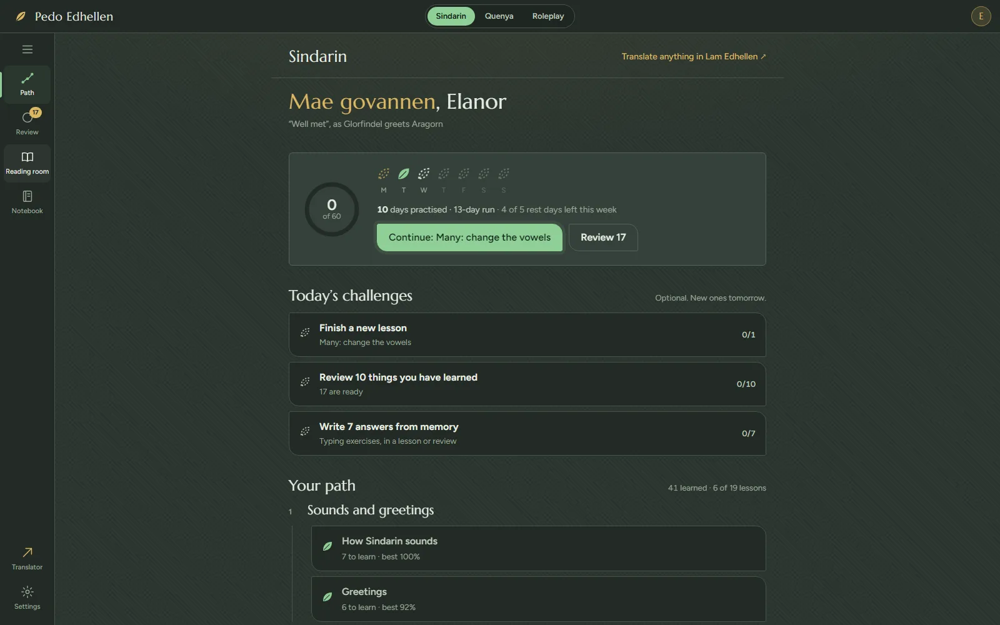
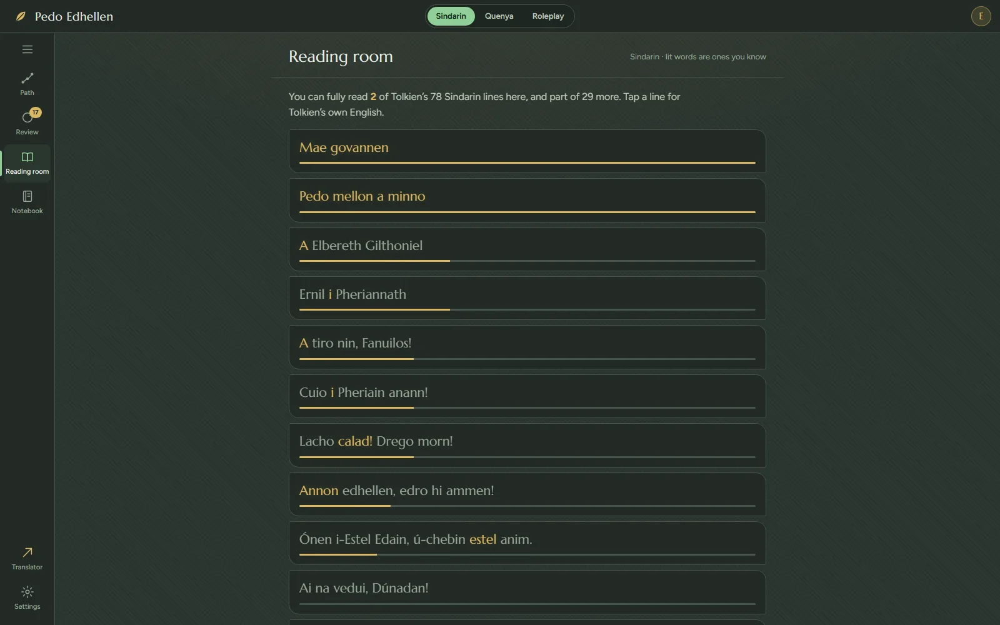

{{page:course|How the course works · Pedo Edhellen|How Pedo Edhellen teaches Tolkien’s Elvish: recall, spaced review, words labelled by source, and a streak with rest days, with the research behind each choice.}}

<div class="wrap">
  <section class="leaf" aria-labelledby="title">
    <div class="text">
      <div class="figure-word">
        <p class="specimen" lang="sjn"><span class="w">Peth<sup class="fn"><a href="#n1" id="r1" aria-label="Note 1">1</a></sup></span></p>
        <p class="tw" aria-label="Peth in Tengwar">{{tw:Peth|S}}</p>
        <p class="say">Say it: <b>{{say:Peth|S}}</b></p>
      </div>
      <h1 id="title">How the course works, and why it is built this way</h1>
      <p class="lede">Every choice below follows a study of how people learn and keep words. The studies are in the notes, so you can check them.</p>
    </div>
    <aside class="margin" aria-label="Notes">
      <ol class="notes">
        <li id="n1"><span class="elv" lang="sjn">peth</span>“word”, in Tolkien’s Sindarin.</li>
      </ol>
    </aside>
  </section>

  <section class="leaf" aria-labelledby="recall">
    <div class="text">
      <h2 id="recall">Recalling, not rereading</h2>
      <p>After a word is introduced, the course mostly asks you for it: pick its meaning, pick the Elvish, type it, build the sentence from tiles. You learn whether you were right at once, and a miss comes back at the end of the lesson. Testing yourself with feedback is one of the two most effective study methods known; rereading and highlighting are among the weakest.<sup class="fn"><a href="#n2" id="r2" aria-label="Note 2">2</a></sup></p>
      <p>Exercises also move from recognising a word to writing it yourself, which builds the kind of knowledge you can use to say something.<sup class="fn"><a href="#n3" id="r3" aria-label="Note 3">3</a></sup></p>
    </div>
    <aside class="margin" aria-label="Notes">
      <ol class="notes" style="counter-reset: note 1">
        <li id="n2">Dunlosky, Rawson, Marsh, Nathan &amp; Willingham, 2013. <cite>Improving Students’ Learning With Effective Learning Techniques.</cite> Psychological Science in the Public Interest.</li>
        <li id="n3">Webb, 2005. <cite>Receptive and productive vocabulary learning.</cite> Studies in Second Language Acquisition.</li>
      </ol>
    </aside>
  </section>

  <section class="leaf" aria-labelledby="spaced">
    <div class="text">
      <h2 id="spaced">Spaced, so it lasts</h2>
      <p>Everything you learn returns for review on a widening schedule. Get it right and the gap grows; miss it and it comes back the same day. Spreading practice out like this beats cramming, and gaps that are too short hurt more than gaps that are too long.<sup class="fn"><a href="#n4" id="r4" aria-label="Note 4">4</a></sup></p>
      <ol class="scale" aria-label="Days until each review">
        <li><b>1</b><span>day</span></li><li><b>2</b><span>days</span></li><li><b>4</b><span>days</span></li><li><b>7</b><span>days</span></li>
        <li><b>15</b><span>days</span></li><li><b>30</b><span>days</span></li><li><b>60</b><span>days</span></li><li><b>…</b><span>kept</span></li>
      </ol>
    </div>
    <aside class="margin" aria-label="Notes">
      <ol class="notes" style="counter-reset: note 3">
        <li id="n4">Cepeda, Vul, Rohrer, Wixted &amp; Pashler, 2008. <cite>Spacing effects in learning.</cite> Psychological Science. For learning vocabulary in another language, Kim &amp; Webb, 2022, a review of 48 experiments.</li>
      </ol>
    </aside>
  </section>

  <section class="leaf wide" aria-labelledby="home-fig">
    <div class="text">
      <div class="plate-row">
        <figure class="plate"><picture><source media="(max-width: 560px)" srcset="shots/app-home-narrow.webp" width="900" height="540"></picture></figure>
        <p class="caption" id="home-fig"><b>Today, at a glance.</b> The points ring, the week drawn as leaves with its rest days, and three optional challenges sized to what you already know.</p>
      </div>
    </div>
  </section>

  <section class="leaf" aria-labelledby="labels">
    <div class="text">
      <h2 id="labels">Every word labelled by where it came from</h2>
      <p>Tolkien left more of some things than others, so each word and line in the course carries one of these marks:</p>
      <ul class="labels">
        <li>{{mark:tolkien}}<b>Tolkien’s</b><span>He wrote it himself; the source is named.</span></li>
        <li>{{mark:built}}<b>Built from his words</b><span>Every word is his, put together with grammar he showed.</span></li>
        <li>{{mark:early}}<b>Early Tolkien</b><span>From his earlier drafts of the language, not the finished version.</span></li>
        <li>{{mark:fan}}<b>Fan-made</b><span>Not his: made by people writing Elvish today to fill a gap.</span></li>
      </ul>
      <p style="margin-top:1.4rem">Before the course says Tolkien left no word for something, the claim is checked against Eldamo across every stage of his languages.</p>
    </div>
    <aside class="margin" aria-label="Notes">
      <p class="caption">The lessons share one checked vocabulary and grammar with the translator, and every lesson is checked against it, so the two never disagree.</p>
    </aside>
  </section>

  <section class="leaf" aria-labelledby="rest">
    <div class="text">
      <h2 id="rest">A streak that rests</h2>
      <p>Your run of days has five rest days built into every week, used automatically, so practising twice a week keeps it going. The number shown first is days practised, which never goes down. A broken streak lowers motivation, especially when people blame themselves for it.<sup class="fn"><a href="#n5" id="r5" aria-label="Note 5">5</a></sup></p>
      <p>There are no hearts, gems or leagues, and no message ever tells you that you have let anyone down. One reminder a day at most, at a time you choose, and only when there is something useful to do.<sup class="fn"><a href="#n6" id="r6" aria-label="Note 6">6</a></sup></p>
    </div>
    <aside class="margin" aria-label="Notes">
      <ol class="notes" style="counter-reset: note 4">
        <li id="n5">Silverman &amp; Barasch, 2023. <cite>On or Off Track: How (Broken) Streaks Affect Consumer Decisions.</cite> Journal of Consumer Research.</li>
        <li id="n6">On guilt about stopping in gamified learning apps, Kuo, Zhao &amp; Scott, Interaction Design and Children. On attention-grabbing notifications, Monge Roffarello et al., CHI 2023.</li>
      </ol>
    </aside>
  </section>

  <section class="leaf" aria-labelledby="inside">
    <div class="text">
      <h2 id="inside">What is inside</h2>
      <table class="plain">
        <thead><tr><th scope="col">Course</th><th scope="col">Lessons</th><th scope="col">For</th></tr></thead>
        <tbody>
          <tr><td>Sindarin</td><td>19</td><td>The Elvish spoken in Middle-earth, from greetings to Tolkien’s own lines and the Tengwar.</td></tr>
          <tr><td>Quenya</td><td>16</td><td>The ancient high tongue, with its cases, verb endings and Galadriel’s farewell.</td></tr>
          <tr><td>Roleplay phrasebook</td><td>7</td><td>Lines an Elf can use at the table: greetings, warnings, battle cries, invocations.</td></tr>
        </tbody>
      </table>
      <p style="margin-top:1.4rem">A few questions when you start recommend a course and a daily length. You can switch at any time.</p>
      <p><a class="more" href="get.html">Get the app {{icon:arrow}}</a></p>
    </div>
    <aside class="margin" aria-label="Choosing a course"><p class="caption">The first questions ask what you want Elvish for: roleplay, reading Tolkien, writing Tengwar, songs, talking with other fans, or curiosity.</p></aside>
  </section>

  <section class="leaf wide" aria-labelledby="reading-fig">
    <div class="text">
      <div class="plate-row">
        <figure class="plate"><picture><source media="(max-width: 560px)" srcset="shots/app-reading-narrow.webp" width="900" height="626"></picture></figure>
        <p class="caption" id="reading-fig"><b>The reading room.</b> Tolkien’s own lines, with the words you already know lit in gold and a bar for how much of each line you can read.</p>
      </div>
    </div>
  </section>
  <section class="leaf close" aria-labelledby="start">
    <div class="text">
      <h2 id="start">Try the first lesson</h2>
      <p>It takes a few minutes, needs no account, and starts with how Sindarin sounds.</p>
      <div class="actions">
        <a class="press" href="app/">Start learning, free {{icon:arrow}}</a>
        <a class="quiet" href="get.html">Other ways to get it</a>
      </div>
    </div>
  </section>
</div>

{{end}}
